整合《政府能源政策跟進能服的策略討論》、今周刊新能源論壇《能源轉型最後一哩路：如何跨越綠能的社會接受度？》及經濟部《能源轉型策略與進展多元、安全與韌性》三份核心簡報。特別獨立呈現「政府對光電政策全景」與「一地兩用實戰典範」，並取消角色分法，直接以資本、營運、場域、供應鏈與終局思維五大決策問題分類，全面對照 David 四原則與兩軸定位，拍板今日高階三大授權事項。
二次能源轉型方針、2030 目標 31.2GW 缺口（年需 3.3GW）、屋頂新制縮水、AI 暴增×土地環評×電網儲能三重夾擊與 AIDC 共址引導。（4 頁）
跨越最後一哩路：破除 NIMBY 鄰避抗爭、志光 85MW / 大亞 240MW 典範、40% 遮蔽率微氣象站、養殖日誌查核與 0403 地震 510MW 儲能救網。（4 頁）
取消角色劃分！直接按資本配置、營運與標準化、一地兩用治理、供應鏈與跨區、市場終局思維五大決策維度，全面盤點 A1/A2/A3 立場與代價。（5 頁）
David 四原則嚴審簡報「決策權外包矛盾」；兩軸定位揭示跳過「6 場域經濟」與「7 產品方案」，缺席「4.6 運維管理」；五大行動線以運維數據飛輪實現最高複利。（3 頁）
三大可選調整方向 A/B/C 全景比較（補中間層 vs 單軌極致 vs 收回成敗錨點），以及高階決策儀表板拍板之「三大今日授權事項」與查核文獻。（2 頁）
政策定調「屋頂優先（Rooftop First）、地面以複合利用為原則（Dual-Use）」。截至 2026 年中累計裝置量約 16 GW，距離 2030 年 31.2 GW 目標仍有逾 15 GW 缺口，單靠屋頂型絕對無法達標！
| 能源轉型推動階段 | 累計裝置容量 | 官方核心推動方針與機制 | 達成進度 |
|---|---|---|---|
| 2016 啟動基期 | 1.25 GW | 啟動太陽光電二年推動計畫，以躉購費率 (FIT) 高誘因帶動民間投資 | 起步 |
| 2024 穩健成長 | 14.28 GW | 屋頂型工業廠房放量，地面型逐步受限於土地與生態爭議 | 已達 46% |
| 2026/06 政策實績 (現狀) | 約 16.0 GW | 總量成長約 13 倍。 屋頂型累計 10.05 GW 佔 64%；區塊開發 R3.3 啟動，深度節電 132.4 億度 | 達標 51% |
| 2030 國家法定目標 | 31.2 GW | 距離目標仍差約 15.2~15.36 GW！ 未來不到 5 年平均每年需新增 3.3 GW（2023 併網僅 2.5 GW） | 極大缺口 |
| 2026–2035 十年新增規劃 | +18.8 GW | 經濟部 GES 2026 現場簡報公布：光電 18.8 GW、風電 14.6 GW、燃氣 26 GW，總投資 5.4384 兆元 | 規劃定案 |
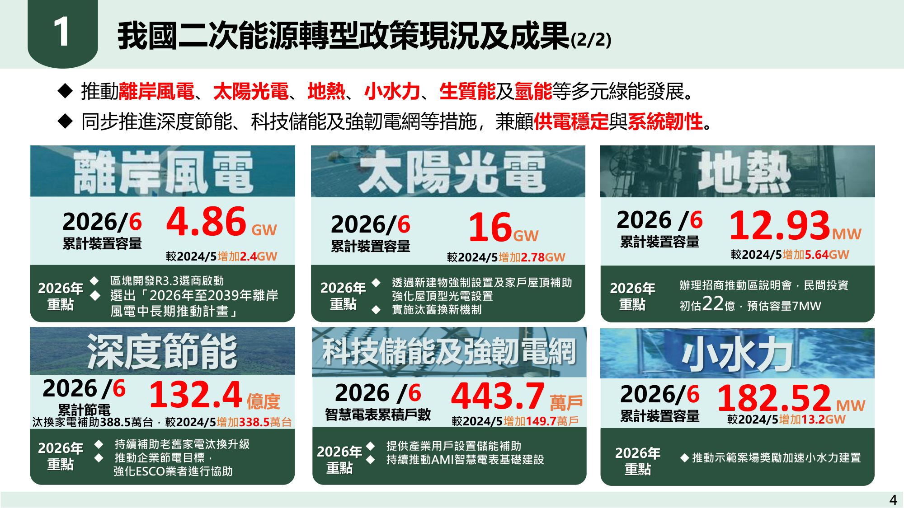
截至 2026 年初，屋頂型雖累積達 10.05 GW（佔 64%），但全台大坪數優質工業屋頂已多數開發。每年 3.3 GW 的龐大增量，必須依賴「地面型複合利用」補足。
中央政策方針已明確宣示：「屋頂優先，地面以複合利用為原則」。這意味著一般單純變更農地的地面型將全面凍結，一地兩用（農漁電共生）成為地面唯一通道。
早期 2016 年前後設置之案場轉換率僅 16~18%，能源署正式啟動汰舊換新機制，以次世代 N 型高功率模組提升單位坪數發電量，是進能服在手維運案場的新商機。
2026 年 8 月 1 日起新建物強制設置光電上路。然而首波政策排除住宅與日常服務店面，使原本預估每年 660 MW 的穩定增量面臨縮水，推進難度提高。
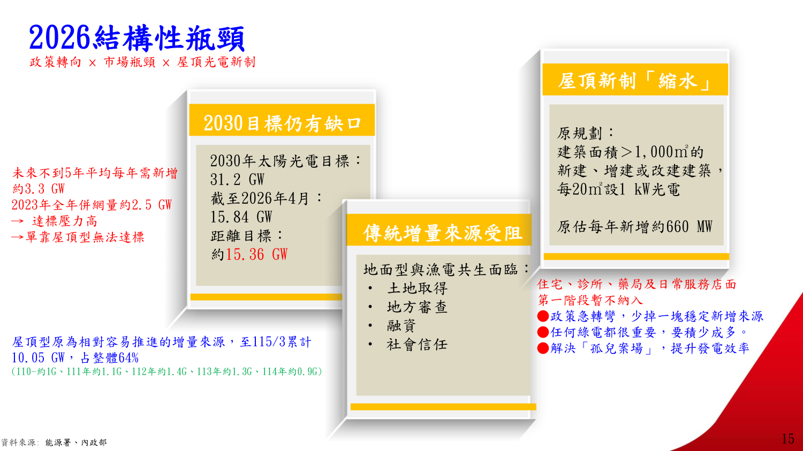
| 政策機制面向 | 具體法規內容與規範門檻 | 官方原先預期效益 | 實務執行痛點與衝擊 |
|---|---|---|---|
| 新建/增改建強制設置 母法：再生能源發展條例 |
2026 年 8 月 1 日起上路：建築面積達 1,000 m² 以上之建物，每 20 m² 應設置 1 kW 太陽光電。 | 預期每年帶動穩定新增案量約 660 MW，成為主要支撐力。 | 政策急轉彎縮水！ 第一階段暫不納入住宅、診所、藥局及日常服務店面，新增案量顯著下修。 |
| 私有建物家戶屋頂補助 至 2028 年底 |
1,000 m² 以下私有建物，每瓩補助 3,000 元，單案最高補助 30 萬元。 | 激勵中小型自用屋頂建置，落實分散式公民參與綠電。 | 單案容量小（一般 10~30 kW），業務溝通成本極高，EPC 統包商規模效益低。 |
| 既有「孤兒案場」問題 早期小型施工商退場 |
早期低價搶進之小型工程商倒閉，留下大量設備損壞、無人維運之案場。 | 提升舊案妥善率，防範火災工安，維持實質發電能力。 | 進能服契機：以高規格 O&M 團隊收購或接管維運合約，轉化為 10 年期服務收入。 |
住宅與零售店面第一階段暫緩實施，意味著 2026–2027 年新建物強制屋頂的釋出量不如預期。進能服必須死守「工業區新建廠房」，並在規劃初期提前卡位。
工業區新建廠房幾乎 100% 超過 1,000 m²，這項法定義務將迫使企業業主與建築師必須在申請建照階段找光電廠商配合，為業務切入創造了天然的法規切入點。
全台累積有數百 MW 孤兒案場發電效率低落且無人保固。透過統一的維運檢測工具與保險配套，進能服能以極低獲客成本取得長約維運現金流。
AI 算力暴增 × 土地環評限縮 × 電網儲能不足。光電三法 9 大紅線與山坡地環評加嚴全面推高開發成本，日間光電與夜尖峰形成巨大供電時間差。
| 結構瓶頸維度 | 量化指標與政策法規限制 | 對產業造成的實質夾擊 | 進能服因應策略 |
|---|---|---|---|
| ① AI 算力暴增 供電時間差急遽惡化 |
• 年均用電成長率 +2.5% (遠高於過去十年 1.24%) • AI 用電量 2029 較 2026 暴增 6.5 倍 (+5 GW) • 夜間尖峰負載年均增長 2.7%，與光電日間發電脫節 |
半導體先進製程擴產提高的是「低碳穩定電力需求」，單純日間發電無法滿足 RE100 企業 24/7 綠電承諾。 | 光儲一體化 (PV+ESS)：為客戶搭配儲能，移轉日間多餘綠電至夜尖峰使用。 |
| ② 土地與環評加嚴 光電三法 9 大紅線 |
• 9 類環評紅線區（風景區、濕地、野保區、特農等） • 山坡地環評門檻由 20 MW 加嚴至 10 MW 或 5 公頃 • 國家風景區全面禁建地面型及水面型光電 |
2025 年底立法院通過光電三法加嚴，經濟部警告地面型恐陷入「地目難審、環評卡關、地方抗爭」之四輸困境。 | 嚴格選案避開紅線：主攻工業區大屋頂與合規漁電專區，杜絕山坡地高風險案。 |
| ③ 電網與儲能不足 輸配電瓶頸壅塞 |
• 輸電級併網許可排隊積壓長達 7 年 • 北部地區電網負荷過大，台電嚴格限制 5MW 以上接入 • 儲能擴建速度遠不及 AI 與高科技產業需求 |
企業反映綠電取得困難、轉供成本高昂；手中有地卻拿不到饋線容量，投資資金嚴重沉沒。 | 鎖定 161kV 特高壓與變電所共址區位；建立等候池掌握饋線釋出時機。 |
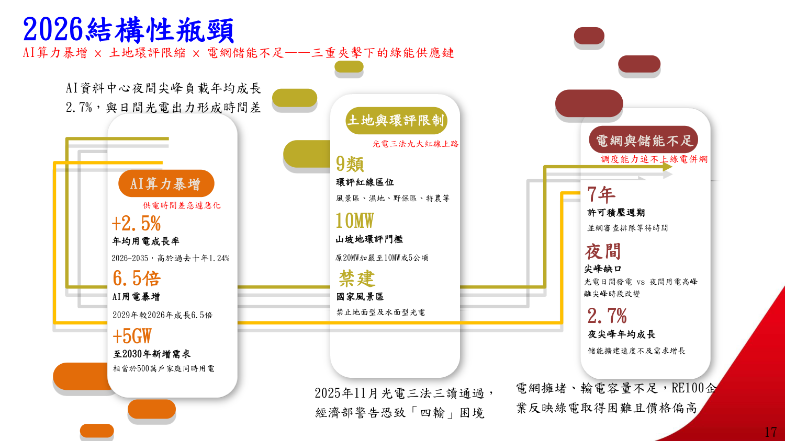
山坡地門檻降至 10MW，基本上宣告山坡地光電無利可圖（環評流程至少 1.5~2 年且不確定性極高）。未來地面型唯一合法且合規的出路，就是「農電共生」與「漁電共生」。
併網容量比土地更稀缺。在電網壅塞區域開發案場等於自尋死路，進能服必須優先開發台電「南崁、長安、大潭」等特高壓變電所周邊 2 公里具備擴充容量的場址。
AI 資料中心夜間負載增長 2.7%，日間光電若無儲能配套，中午超發會面臨棄電或負電價風險。PV+ESS（光儲合一）將成為 2027–2029 年的標配投標規格。
算力就是國力，算力背後是電力。經濟部發布 AIDC 四大電力因應對策：穩供藍圖、區位引導共址共構、5MW+ 能源說明書能效把關與政策多元出擊。
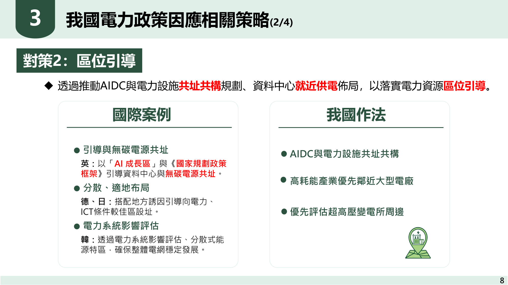
| 政策對策主軸 | 官方具體推動措施與標準門檻 | 國際對標與制度借鏡 | 進能服業務對接切入點 |
|---|---|---|---|
| 對策 1：穩供藍圖 燃氣淨增 25.98 GW |
確保興達、台中、通霄、大林及協和等火力電廠如期上線；持續滾動發布全國電力供需報告。 | 國際皆將算力基礎設施納入國家戰略穩供範疇。 | 爭取電廠與變電所內部配電、EPC 輔助工程與緊急備援電力建置。 |
| 對策 2：區位引導 共址共構 2km 法則 |
落實 AIDC 與電力設施共址共構：高耗能產業優先鄰近大型電廠與特高壓變電所，降低線損。 | 英國「AI 成長區」與無碳電源共址；德、日地方誘因引導至電力優良區。 | 主攻桃園/蘆竹/大潭等特高壓場址，為美商 Colo 提供 161kV 併網統包與綠電專線。 |
| 對策 3：能效把關 PUE ≤ 1.3 強制 |
5MW 以上資料中心強制提能源使用說明書；超大型 AIDC PUE ≤ 1.3，主機代管 PUE ≤ 1.4，事前 BAT 檢核。 | 德新設 ≤1.2、星 ≤1.25、日 ≤1.3；增列地方就業與產業效益評估指標。 | 提供 Vertiv 液冷＋乾冷器整合、480Vac→800Vdc 集中整流，確保設計 PUE < 1.15。 |
| 對策 4：多元出擊 兆元保險資金 |
推動屋頂義務、家戶補助；國家融資保證提高至八成；引導保險資金投入再生能源與儲能。 | 各國透過促參租稅（投資逾 3 億且算力達標享租稅優惠）帶動民間資本。 | 引進壽險資管資金（國泰/富邦）承接黑灰區重資本，進能服專注高毛利 EPC 與 15 年 NNN 包租。 |
北部地區電網飽和，台電原則上不再受理大型單點申請。唯有鄰近大型電廠或超高壓變電所 2 公里內的專用線路，才能拿到台電核供函。
5MW 以上資料中心必須取得經濟部能源使用說明書核准。傳統氣冷架構（PUE 1.5~1.6）直接被法規淘汰，液冷與高壓直流 (800Vdc) 成為唯一解。
配合政府「兆元投資國家發展方案」，以壽險資金長租承接重資產，進能服自有資金降至 5~10%，將商業模式從重資產轉型為輕資產開發服務商。
社會氛圍「支持能源轉型，反對在自家旁邊設置」。一地兩用（農漁電共生）的成敗關鍵不是光電板蓋多少，而是能否有效治理五大社會衝突！
| 地方社會衝突成因 | 過去傳統工程思維之缺失 | 一地兩用治理轉型解方 | 實戰成效 |
|---|---|---|---|
| ① 鄰避效應 (NIMBY) 「支持轉型，反對設置」 |
認為只要取得中央合法容許即可強行施工，忽視地方居民情感。 | 落實《環境影響評估法》與《再生能源發展條例》選址原則，嚴格避開敏感聚落與文化信仰中心。 | 阻力化解 |
| ② 資訊不透明 單向告知引發恐慌 |
僅於開工前一週張貼公告，地方質疑偷渡，謠言四起。 | 每年常態舉辦 2 次以上輔導說明會，建立在地常設對話機制，從「單向告知」轉向「共同參與」。 | 建立對話 |
| ③ 利益分配不均 「財團賺走，地方承擔」 |
給予里長少許一次性回饋金，工程結束後斷絕往來。 | 建立「公益回饋金 ＋ 敦親睦鄰風災救助」機制，將地方承擔成本轉化為地方公共服務共享效益。 | 利益共享 |
| ④ 生計與文化衝擊 滅漁滅農滅村疑慮 |
單純追求光電滿鋪，破壞既有養殖池結構，導致漁民無法作業。 | 堅持「養殖為本 ＋ 綠能加值」：導入智慧監控與微氣象設備，降低極端氣候對農漁產量之衝擊。 | 產量保障 |
| ⑤ 社會信任缺失 假種田、真種電弊端 |
無實質耕作，被媒體爆料雜草叢生，面臨行政處分與撤照。 | 建立養殖工作日誌與定期查核機制，全區取得水產品產銷履歷認證，強化品質與社會公信力。 | 法規零風險 |
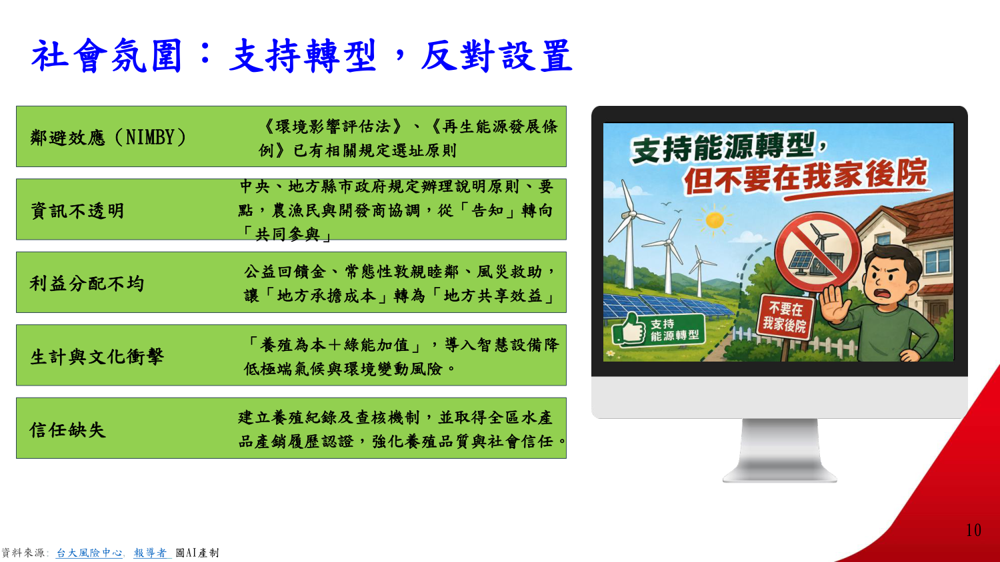
主管機關對漁電共生加強實地稽核。沒有實質養殖事實，電業執照隨時會被撤銷。進能服必須讓光電設備服務於養殖生產，而非喧賓奪主。
一次性補償金只會引發後續源源不絕的索求；將部分售電利潤提撥為地方長照、急難救助車輛與風災搶修基金，案場才能真正被地方接納為資產。
養殖成果取得政府產銷履歷認證，公開生產履歷與水質檢驗數據，不管是面對環團抗議、主管機關抽檢或檢調檢舉，都能瞬間拿出無懈可擊的事實證據。
114 公頃、85 MW 光電 ＋ 35 MW 光儲示範場。案場規劃從養殖需求出發，光電遮蔽率嚴格控制在 40%，以科技化水質監控保障養殖戶收益。
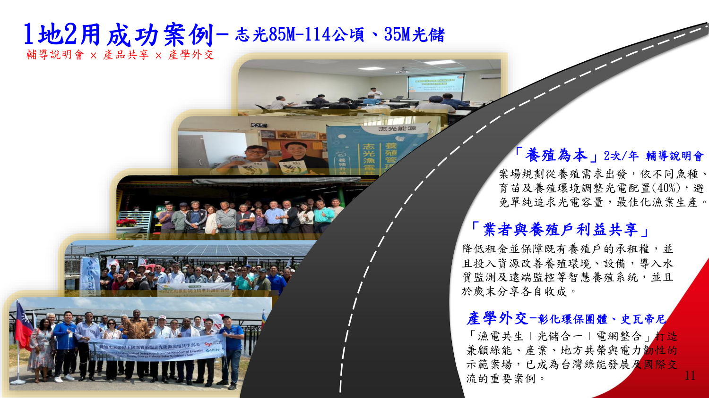
| 實戰落地核心模組 | 具體執行規格與技術參數 | 管理效益與營運指標 | 驗證依據 |
|---|---|---|---|
| 光電遮蔽率最適化 避免單純追求容量 |
嚴格依魚種習性配置光電板遮蔽率 40%，保留充足日照池面促進藻水與溶氧生成。 | 保障魚塭光合作用正常進行，消除傳統全面覆蓋導致魚群病變死亡之疑慮。 | 產量穩定 |
| 養殖物種精準配對 實地養殖查核 |
選定耐低光或底棲性經濟物種：龍虎斑、黃臘鰺、金錢魚、草蝦，建立最適養殖週期。 | 龍虎斑與黃臘鰺高經濟價值，年產值遠高於傳統虱目魚，大幅增進養殖戶總收益。 | 抽檢合格 |
| 微氣象站與智能水車 氣候韌性科技化 |
設置場域微氣象站（即時偵測溫濕度、風向風力）；搭配池水含氧量、pH 值感測器。 | 讓水車打水從憑個人經驗轉為自動化數據調控；冬季自動啟動防寒布棚，抗寒減災。 | 科技升級 |
| 養殖日誌大數據庫 可追溯、可判斷、可還原 |
每日記錄投餌時間、飼料量、生長曲線、水質異常點，建立案場全生命週期大數據。 | 遭遇水質異常即刻警報並還原原因，杜絕死魚爭議；全量提供主管機關隨時抽查。 | 備查合規 |
| 漁民利益深度綁定 租金減免與承租權保障 |
主動調降魚塭租金，保障原養殖戶具備優先承租權，並於歲末分享漁獲收成。 | 吸引在地青年漁民第二代返鄉投入智慧養殖，解決台灣農漁村高齡化斷層危機。 | 地方共融 |
志光案場實證顯示：40% 遮蔽率既能在盛夏為池水降溫 2~3°C 減少高溫熱緊迫，又保留了足夠光線供藻類繁殖，是兼顧發電量與養殖收成的黃金比例。
微型氣象站與水質感測器解決了傳統養殖「靠天吃飯」的痛點。水質異常在 5 分鐘內自動推播手機，大幅降低翻池暴斃風險，養殖戶因此成為光電最堅定的盟友。
傳統魚塭勞動辛苦無人接班。志光案場導入智慧物聯網監控與優質設備，成功吸引養殖戶二代青年返鄉接班，成為產學交流與國際外交參訪的國家級亮點。
大亞綠能 240MW 案場實證：不是「被犧牲」而是「共享利益」。完善水門水渠公共養護，搭配 0403 地震儲能 1 秒釋出 510MW 穩住電網，實現全方位韌性。
| 利害關係人面向 | 實務落實作為與具體支援行動 | 創造的共生價值與社會信任 |
|---|---|---|
| 養殖戶夥伴 生產端核心 |
• 工程設計與養殖戶充分溝通，依物種特性規劃 • 保障優先飼養權、租金優化、提撥養殖發展基金 • 協助取得養殖登記證、水權申請與全區產銷履歷 |
漁民從單純承租戶轉型為「智慧綠能養殖合夥人」，生產環境與抗災力全面升級。 |
| 鄰里與社區 在地常設支援 |
• 定期工程進度通報，落實施工交維計畫避開交通尖峰 • 在地信仰公廟修繕與文化贊助 • 捐助地方救護與急難救助車輛、常態提撥社區發展基金 |
案場融入在地生活圈，化解村民反彈，讓地方長者與鄉親切身感受光電帶來的公共回饋。 |
| 環境與公共水利 防汛排水基礎 |
• AC 瀝青路面全線重新鋪設，方便農機與居民通行 • 主動認養公共水渠、水閘門、水斗門定期清淤維護 • 增設防汛高規格排水涵管，解決颱風季積淹水宿疾 |
徹底打破「光電破壞水利防汛」之謠言，反向提升全區防洪耐災等級，受到農田水利會肯定。 |
| 電網韌性 (光儲) 0403 大地震實證 |
• 2024/4/3 規模 7.2 花蓮大地震，台電多部機組跳脫，頻率暴跌至 59.46 Hz • 儲能系統 1 秒內瞬間釋出 510 MW，阻止低頻卸載，避免全島陷入大停電 |
證明儲能不是嫌惡設施，而是守護台灣高科技產業與民生用電不中斷的電網定海神針！ |
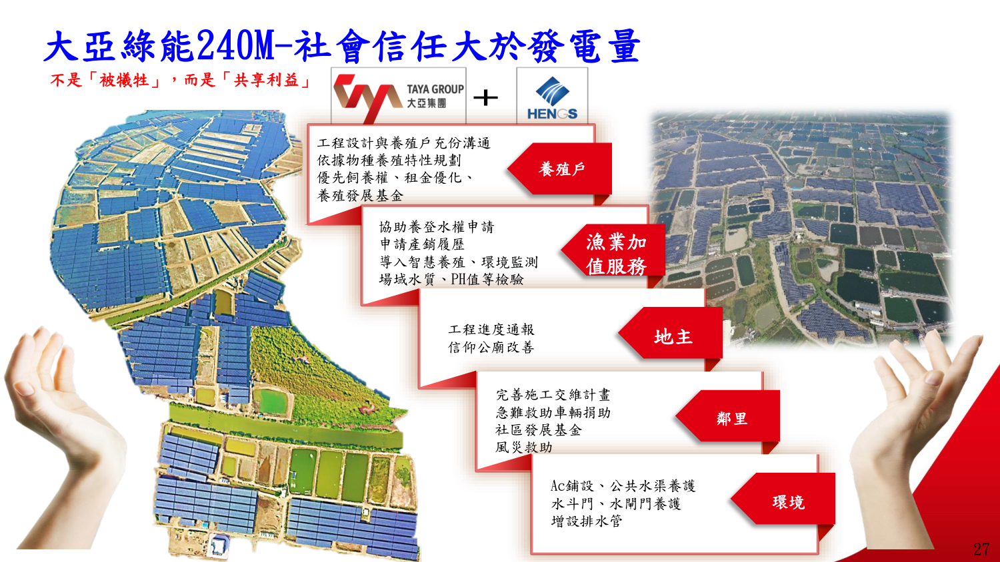
沿海漁村最怕颱風大潮水閘門年久失修淹死魚蝦。大亞與進能服出資維護公共水閘門與排水溝，直接解決了漁民數十年的心頭大患，贏得全村口碑支持。
花蓮 7.2 強震台電跳脫 3,200MW 電力，儲能系統在 10 秒內補上 510MW 關鍵負載，防止全台大停電。這項實證成為向地方說明儲能安全性的最強背書。
電價與材料成本每季波動，但案場在地方建立的社會信任與法規零瑕疵紀錄，是金融機構與主權基金進行併購或資產證券化 (REITs) 時溢價最高的核心要素。
綠能產業面臨地緣政治與政策環社考驗。唯有透過制度協調、透明資訊、在地參與、生態優先、共享雙贏五大支柱，才能阻斷千億撤資危機。
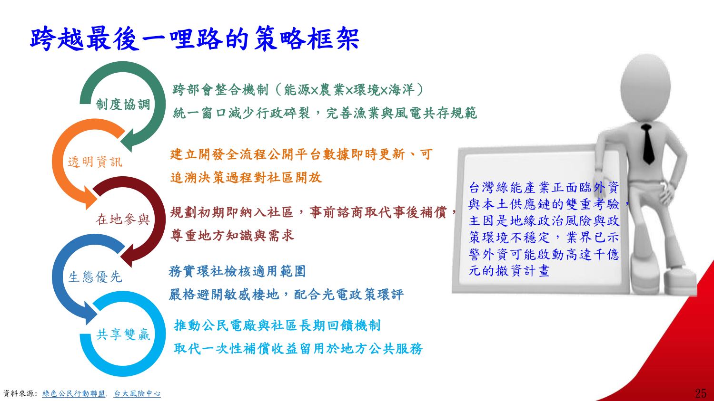
| 五大治理支柱 | 核心內涵與制度要求 | 進能服 2027–2029 執行對策 | 戰略目標 |
|---|---|---|---|
| ① 制度協調 跨部會整合 |
建立「能源 × 農業 × 環境 × 海洋」跨部會整合單一窗口，減少行政審查碎裂，完善農漁電共存法規規範。 | 專案團隊設專責法規經理，對接縣府農業處、建設局與台電營業處，以套裝法遵文件送審。 | 縮短週期 |
| ② 透明資訊 全流程平台 |
建立開發全流程公開平台，數據即時更新，決策過程對社區公民開放，具備完整可追溯性。 | 將場域微氣象與水質檢驗數據串接至公開看板，以數據說話，消除黑箱操作疑慮。 | 杜絕造假 |
| ③ 在地參與 事前諮商 |
規劃初期即納入社區居民與利害關係人，以「事前諮商」取代「事後補償」，充分尊重地方知識。 | 在場址勘查前即指派公關經理拜會村里長與耆老，將地方排水與巡查需求納入施工藍圖。 | 前置化解 |
| ④ 生態優先 避開敏感區 |
務實界定環社檢核範圍，配合光電政策環評，嚴格避開敏感棲地、黑面琵鷺度冬區與法定濕地。 | 堅決不碰爭議地塊：GIS 圖資套疊篩檢，凡落入 9 大紅線或爭議區一律自動放棄。 | 零抗爭 |
| ⑤ 共享雙贏 收益留地方 |
推動公民電廠與長期公共收益機制，取代一次性微薄補償，讓綠能收益真正留用於地方公共福祉。 | 研議「社區綠能合作社」分潤機制，提供部分機組讓在地鄉親認購持股，同享 20 年售電回報。 | 終生盟友 |
一個漁電共生案往往要跑經濟部、農業部、環境部、內政部與地方政府五個婆婆。進能服必須建立模組化申請範本，將行政審查時間從 18 個月壓縮至 9 個月。
世界上沒有任何高回報值得公司捲入生態抗爭與地方司法調查。在專案前期透過 GIS 衛星空照與環保圖資一票否決，省下的法律與公關成本不可估量。
借鏡丹麥與德國能源合作社經驗：當村民屋頂與地方活動中心就是發電廠的一分子、每個月戶頭都能收到售電分潤時，居民就會主動巡檢護衛案場安全。
聚焦資本回報與公司定位：屋頂與地面如何分配？成本暴漲時煞車點何在？進能服要當純 EPC、電廠持有者還是運維服務商？合理市佔如何設定？
| 決策核心問題 | 立場 A1 與必須承擔之代價 | 立場 A2 與必須承擔之代價 | 立場 A3 與必須承擔之代價 (推薦) |
|---|---|---|---|
| Q1 資本分配比例 屋頂 vs 地面資本效率 |
重壓屋頂 (7:3)：周轉快、風險低。 代價：天花板明確，毛利三年內被磨平。 |
重壓地面複合：年金型資產護城河。 代價：前期回收長，成敗綁外部團隊。 |
階段性資本閘門 (推薦)：依毛利與合約里程碑動態撥款。 代價：需高紀律管會即時資料系統。 |
| Q2 成本暴漲底線 衝量 vs 減速煞車點 |
設毛利率絕對下限：破線一律不接單。 代價：短期營收掉，同業削價卡位搶市。 |
合約物價連動條款：鋼銅物價指數轉嫁。 代價：需極高議價力，中小業主普遍拒絕。 |
以現金轉換天數 (CCC) 煞車 (推薦)：墊款過長即停。 代價：概念對第一線較抽象，需財務精算。 |
| Q3 EPC vs 資產持有 承包商 vs 電廠持有 |
守住 EPC 本業：專注低成本短交期。 代價：價格競爭長期毛利向下，依賴年接單。 |
往下游持有電廠：獲取 20 年售電現金流。 代價：負債比攀升，承擔長期天候電價風險。 |
持有維運合約 (折衷首選)：以工程換長期運維長約。 代價：需規模經濟效益，前期備品庫存成本。 |
| Q4 市佔目標與擴編 組織擴充 vs 市場節奏 |
不設市佔，設能力指標：單位工時與週期。 代價：對董事會與外部投資人溝通較弱。 |
設年新增 MW，倒推組織：規模擴編。 代價：政策選商延後時，組織淪為固定負擔。 |
分軌計分卡 (推薦)：屋頂看量與成本，地面看質與驗證。 代價：內部兩軌爭奪資源，仲裁管理成本高。 |
| Q5 價值鏈終局落點 EPC 是否被夾在中間 |
價值往上游開發權移動：累積自有饋線案源。 代價：開發為長週期負現金流，資金耐受高。 |
價值往下游維運售電移動 (推薦)：鎖定 20 年營運。 代價：下游對手皆為大型金控，需資管能力。 |
價值留在極致規模 EPC：贏者通吃壓低成本。 代價：要求巨額擴張，一旦在成本落後即出局。 |
屋頂雖然快但利潤易被磨平；地面雖然規模大但回收期逾 24 個月且高度依賴外部人。董事長拍板的核心是「階段性閘門」而非一次性定額分配。
真正壓垮工程公司的是「應收帳款與存貨同時膨脹」。在成本上漲期，業主延遲驗收，墊款週期拉長即是流動性危機，必須盯緊 CCC 天數。
不承擔重資產負債，卻能透過 EPC 案源綁定 10~20 年維運合約，毛利率高達 25~35%，這才是最符合進能服體質的輕資產轉型路徑。
聚焦第一線交付能力：每年要接多少 MW？屋頂三大卡點如何突破？長約鎖價鎖量還是鎖產能？標準化從何切入？在手已報價案遇成本暴漲如何處置？
| 決策核心問題 | 立場 A1 與必須承擔之代價 | 立場 A2 與必須承擔之代價 | 立場 A3 與必須承擔之代價 (推薦) |
|---|---|---|---|
| Q6 每年接單 MW 目標 產能上限 vs 市場追趕 |
現有產能上限反推：確保交期與施工品質。 代價：成長被產能鎖死，拱手讓出市場份額。 |
以毛利總額為目標：促使團隊做大做優質案。 代價：成本暴漲期投標預估失真，數字造假。 |
MW 綁定履約品質門檻 (推薦)：驗收未達標不計績效。 代價：需客觀數據系統防範前線報喜不報憂。 |
| Q7 屋頂三大卡點破解 沒意願 / 沒饋線 / 開發費高 |
只解「業主沒意願」：發揮主場提案能力。 代價：放棄已有名單但卡饋線案，接單受限。 |
轉化「沒饋線」為時間差：建立排隊等待庫存。 代價：養客戶耗成本，釋出時恐被同業攔截。 |
開發費高改走租賃分潤 (推薦)：拉入投資方分攤。 代價：交易結構複雜，需承擔長期營運責任。 |
| Q8 長約鎖價控制損失 長約量與期如何定 |
僅鎖已簽約專案用料：不做投機性鎖價。 代價：失去低點大量鎖價紅利，成本逐案墊高。 |
分批鎖價時間分散：平均成本法降單點風險。 代價：非最低價，行政議約繁瑣，小廠不配合。 |
不鎖價改鎖產能與交期 (推薦)：確保不違約罰款。 代價：暴露價格波動，可能需付優先供貨溢價。 |
| Q9 工程標準化切入點 從哪裡開始回收最快 |
從設計端收斂 (推薦)：模組支架標準組合庫。 代價：放棄個案最佳化，懂行業主可能挑戰。 |
從施工工法與檢核開始：統一工班順序規範。 代價：上游設計百花齊放會抵銷工法標準化。 |
從料件編碼與 BOM 開始：統一資料地基。 代價：純後台工程，半年無外部可見成果。 |
| Q10 設計/採購/業務優先序 資源不足先做哪個 |
先做設計最佳化 (推薦)：一省兩用槓桿最大。 代價：效益在下一批新案展現，在手案毛利無救。 |
先做採購降本：鎖量見效快，單季反映財報。 代價：供應商讓利空間有頂，邊際效益遞減。 |
先做業務串聯搶量：無案源其他皆空談。 代價：上漲期衝量恐簽下一批虧損合約成包袱。 |
| Q11 在手已報價未簽約案 成本暴漲時定價處置 |
設定有效期嚴格重報：過期自動重新核價。 代價：舊客認為不守信用，競爭案等於退出。 |
調降規格吸收成本：總價不變，調整用料。 代價：損害長期發電績效，日後糾紛侵蝕信譽。 |
策略價值分類處理 (推薦)：指標案吸收，一般重報。 代價：標準易被業務濫用，內部協商內耗。 |
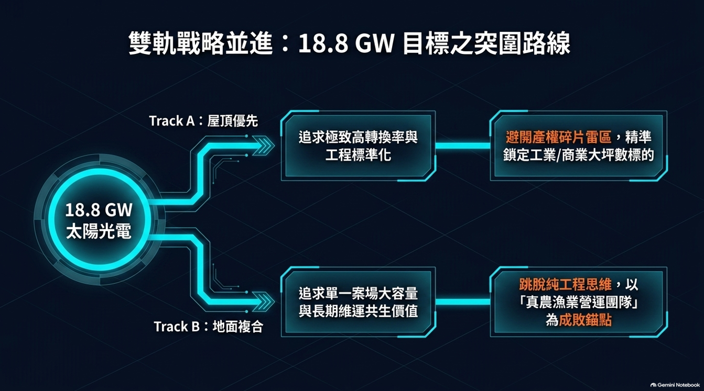
推動標準化，設計端每省一塊錢，採購與施工就能連帶節省五塊錢。將模組排列與支架型式收斂為標準模組庫，效益在下半年即可釋放。
在變壓器與特高壓開關缺貨期，專案最大死因是「逾期併網被台電罰款或取消躉購資格」。與重要廠商鎖定交期配額，比死扣價格更能保證履約利潤。
成本海嘯期絕不允許無期限報價單在市場流通。所有報價單必須明定「30 天有效，逾期重新核算」，並載明鋼銅物價連動條款，鎖住專案底線。
直面一地兩用結構性挑戰：成敗押在農漁團隊的風險誰承擔？農用事實不足如何防範撤照？前期沉沒成本誰吸收？如何防範無約暴露？是否重定義為場域整合商？
| 決策核心問題 | 立場 A1 與必須承擔之代價 | 立場 A2 與必須承擔之代價 | 立場 A3 與必須承擔之代價 (推薦) |
|---|---|---|---|
| Q12 農漁團隊成敗風險 外部變數如何控制 |
成立合資公司 (JV)：利益股權綁死。 代價：承擔農漁本業病害與勞力虧損。 |
嚴格替換外包機制：未達標即退場。 代價：地方關係與作期備查使替換耗時逾年。 |
自建最小可行營運能力 (推薦)：自有場取得真實數據。 代價：新領域管理成本高，3 年內純投資。 |
| Q13 農業事實法遵撤照 農地農用查核防線 |
設立獨立法遵查核機制 (推薦)：實地勘驗耕作事實。 代價：增加稽核成本，被前線業務視為干擾。 |
合約與保險全額轉嫁：違約由農漁團隊賠償。 代價：對方多為小本經營，實務求償金額極低。 |
策略性收斂成熟型態：只做審查前例充足者。 代價：放棄新創型態超額報酬，案源受限。 |
| Q14 前期申設無償成本 沉沒成本誰來吸收 |
要求投資方分攤前期費：約定退場補償。 代價：若同業願意免費投入，公司恐出局。 |
公司吸收但設停損 (推薦)：每案設上限與時限。 代價：沉沒成本愈深愈難割捨，易一延再延。 |
前期獨立報價顧問費：以專業服務收費篩選。 代價：打破市場免費慣例，後續工程優先權變弱。 |
| Q15 無約或弱約狀態盤點 前期投入的法律暴露 |
全面盤點暴露金額 (推薦)：清查所有進行中合約。 代價：揭露人情推進無約黑數，引發管理陣痛。 |
不咎既往，嚴管新案：新案未簽約不得投資源。 代價：既有暴露完全未解，爆發爭議仍需認賠。 |
合約納入系統放行門檻：未附合約無法請購設計。 代價：法務審查塞車，前線可能私下繞道推進。 |
| Q16 公司身分定位重定義 場域整合商 vs 純工程 |
重定義為「場域整合商」：整合農漁、土地、資金。 代價：文化重塑極難，以工程為榮員工恐流失。 |
守住工程本位：整合交給外部專業開發商。 代價：永遠被壓價，緊縮期淪為隨時可換代工廠。 |
設獨立主體承載整合 (推薦)：工程維持，另設專案公司。 代價：關係人交易與治理複雜度提升。 |
把成敗錨點押在農漁團隊是根本的策略錯誤。自建 1~2 個示範案場培養內部團隊，掌握實質養殖產量與水質數據，公司在談判桌上才有定價話語權。
前期作業（申設、水保出圖、地方公聽會）最容易成為無底洞。今日拍板：單案前期投入達上限或逾 90 天未獲地政核准，強制啟動停損退場！
主管機關加強衛星空照與不預警抽查。全區導入工作日誌與產銷履歷認證，將養殖事實驗證標準化，徹底杜絕行政處分甚至撤照風險。
應對物料海嘯與組織內耗：關鍵夥伴集中度風險如何化解？敏感度分析如何做？跨區協調瓶頸在資源、資料還是誘因？月會決議如何真正落地？
| 決策核心問題 | 立場 A1 與必須承擔之代價 | 立場 A2 與必須承擔之代價 | 立場 A3 與必須承擔之代價 (推薦) |
|---|---|---|---|
| Q17 供應商集中度風險 「門當戶對」夥伴安全嗎 |
建立第二來源 (2nd Source)：每類備援一家。 代價：驗證費用高，採購量分散削弱主力議價力。 |
維持集中換優先配額：要求夥伴財務透明。 代價：過度依賴單一對象，夥伴爆雷無緩衝期。 |
按關鍵性分級處理 (推薦)：變壓器備援，支架維持集中。 代價：機制維護繁瑣，需定期滾動調整等級。 |
| Q18 成本敏感度分析基礎 線材+15% 變壓器+10% 鋼構+10% |
要求三情境分析 (推薦)：樂觀/基準/悲觀推演。 代價：假設本身仍是判斷，需採購財務工時。 |
在手案逐案成本重估：算出現實毛利缺口。 代價：只看後照鏡，對未來三年新案無預測力。 |
建立銅鋼指數預警：破觸發值啟動調價條款。 代價：被動應變，無法支援五年計畫預算編製。 |
| Q19 跨區協調瓶頸重編 北中南資源調度卡死 |
打散重編為功能中心：設計採購總部收回。 代價：區域主管抵抗強，前線反應速度短期下滑。 |
維持架構但統一數據：掌握即時進度成本。 代價：資料建置期長，未來一年協調依舊卡頓。 |
考核引入跨區支援誘因 (推薦)：支援他區計入績效。 代價：無法解決總體人力不足，只是重新拆分。 |
| Q20 跨區月會決議落地 決議常淪空談的真正病因 |
單一究責人與明確期限 (推薦)：追蹤未結項目。 代價：會議氣氛直白緊繃，需高階長期支持施壓。 |
下放個案協調：會議只審跨區資源仲裁。 代價：工作層級授權不足時個案全卡死在基層。 |
先統一共同數據：杜絕各區各說各話。 代價：資料治理耗時一年，短期會議品質難改善。 |
| Q21 成本防衛戰雙管對策 簡報瀑布圖能否守住毛利 |
完全依賴採購端鎖價：長約集中採購壓低成本。 代價：在賣方市場無議價空間，供應商毀約風險高。 |
完全依賴工程端防禦：極致優化設計工法。 代價：工程節省有物理極限，難敵原料雙位數暴漲。 |
雙管齊下＋商模升級 (推薦)：保量鎖價＋合約指數轉嫁。 代價：需法務、採購、工程三方高度協同作業。 |
變壓器價格指數大漲 60%、交期長達 18 個月。今日拍板：授權採購部提前啟動 2026–2027 年關鍵物料「框架採購合約」，先鎖配額產能，再談滾動計價。
盤體與變壓器是案場併網的咽喉點。若單一主力供應商因產能不足延遲交貨，公司將面臨巨額逾期罰款。必須至少認證一家合格備援廠商。
跨區協調會不能再以「請北區多支援南區」作結。每項跨區支援必須載明支援工程師姓名、借調天數、交接標準與完成期限，下次會議逐項對表。
站在終局看今天：屋頂優先下進能服的真實差異化是什麼？2027–2029 最可能顛覆玩法的變數？決策數據可靠度如何分級？2029 年回頭看最可能後悔什麼？
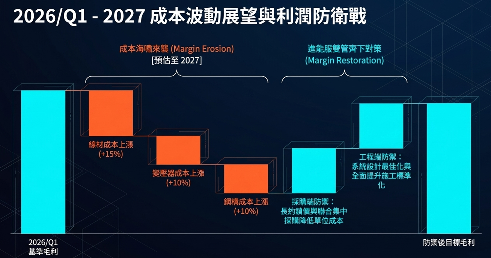
| 決策核心問題 | 立場 A1 與必須承擔之代價 | 立場 A2 與必須承擔之代價 | 立場 A3 與必須承擔之代價 (推薦) |
|---|---|---|---|
| Q22 進能服真實差異化 屋頂優先下的真實壁壘 |
跨區同步交付能力：北中南實體據點承接連鎖製造業。 代價：跨區協調若名實不符，大案交付失敗傷害更大。 |
維運數據驅動設計 (推薦)：發電實測與故障庫優化次案。 代價：數據清洗需時間累積，短期易淪行銷語言。 |
承認無結構差異：三年內在特定規模打極致成本。 代價：選定等於放棄其他方向，建設期長達三年。 |
| Q23 2027–2029 顛覆變數 重寫遊戲規則的外在力量 |
儲能與電力交易成熟：案場轉向收益最佳化模型。 代價：需新電力電子技術，早期投入恐押錯路線。 |
AI 資料中心強烈綠電需求 (推薦)：重構高階客戶層級。 代價：資安與合規標準遠高製造業，短期恐未達標。 |
躉購費率實質下調：現有專案財務模型全面失效。 代價：完全在控制外，過度保守或樂觀皆可能重創。 |
| Q24 外部數據決策可靠度 簡報引用數據查核治理 |
建立資料三級分級制 (推薦)：官方公告/媒體轉述/內部推估。 代價：簡報工時增，無法引無來源驚悚數字。 |
按用途分級：僅進董事會與募資需逐筆審核。 代價：多版本管理混亂，未核版本恐外流事故。 |
查核責任外部化：聘外部顧問出具數據意見書。 代價：費用高時間長，內部失去數字敏銳度。 |
| Q25 2029 回頭看最後悔什麼 站在三年後的遺憾預演 |
後悔沒建自有案源庫存 (推薦)：三年後議價力仍在人手。 代價：短期零營收，在成本壓力期最容易被腰斬。 |
後悔沒把數據全面數位化：成熟期想抓效率已無時間。 代價：IT 投資回報難以單獨歸因，推行阻力極大。 |
後悔沒早砍虧損區域業務：成長掩蓋消耗，浪費資金。 代價：收業務傷人傷感情，且需精確分區損益資料。 |
若 2027–2029 年只忙著做別人轉包的工程，三年後市場總量放緩時，進能服將毫無議價權。擁有「自有土地開發權、饋線位置與維運合約」才是穿越週期的硬資產。
台灣 2026 供需報告預測用電年均增長 2.5%，資料中心申請量暴增。這類客戶需要 161kV 特高壓穩定電力與充裕綠電，是進能服從屋頂跨入高階能源服務的最佳跳板。
內部策略簡報中的外部數字必須全面標註：「官方公告／媒體報導／內部推估」。如 5.4384 兆與 18.8GW 已證實出自 GES 現場簡報，對外引用應精準註明。
以 David 四大底層原則（少而精、先規劃後執行、脈絡複利、決策權在人）檢驗簡報策略。地面型成敗押在外部團隊，構成根本的「決策權外包矛盾」！
| David 核心原則 | 簡報原始規劃之具體表現 | 深度判讀與深層矛盾分析 | 檢驗結果 |
|---|---|---|---|
| 少而精 集中優勢兵力做減法 |
同時推進「屋頂雙軌 ＋ 地面雙軌 ＋ 七類供應商夥伴 ＋ 採購與工程雙防禦」。 | 抵觸最明顯的一項。 未說明新增這些龐雜動作要「取代或放棄」什麼。四條戰線同時鋪開，依現有跨區人力現狀，極易淪為全面半成品。 | ⚠️ 嚴重抵觸 |
| 先規劃後執行 頂層架構先行 |
雙軌架構先行確立、細節後補；第 5 頁以明確架構界定屋頂與地面之不同邏輯。 | 高度相符。 雙軌框架邏輯清晰，適合作為 2027–2029 策略規劃之頂層骨架，利於後續拆解細部執行指標。 | ✅ 相符 |
| 脈絡複利 後案重用前案資產 |
屋頂軌與地面軌平行推進，但各自為政，兩軌間完全缺少可跨軌複用的共享中間層。 | 兩軌在客群、通路、風險型態與合作夥伴皆不重疊。若無共用之料件庫與數據底座，等於兩家獨立小公司各自摸索，無法產生複利。 | ⚠️ 缺少中間層 |
| 決策權在人 核心主導權留內部 |
地面複合軌將「成敗錨點」直接交給外部配合的養殖/種植農漁團隊。 | 結構性致命矛盾！ 把身家性命押在自己無法指揮監督的外部人身上，等於把決策主導權實質外包。這不是執行問題，是根本的策略設計缺陷。 | ❌ 結構性矛盾 |
「少而精」的真諦不是什麼都想做，而是清楚知道「什麼堅決不做」。如果 2027–2029 要把工業區大屋頂做透，就必須明確放棄分散的小型案與無效協調。
地面型光電絕不能只是「找個農夫來種地」。進能服若無法判斷農作物的存活率與成本，在談判桌上永遠是被資訊不對稱牽著鼻子走的弱者。
屋頂與地面不是分家，而是應在底層共用：統一料號 BOM、標準圖說庫、集中採購議價權與維運妥善率數據。這層不建，做再多案子都是零星個案。
以 David 兩軸坐標（縱軸：組織階層 1.0~4.0 × 橫軸：價值鏈 1~9）拆解簡報內容，暴露出跳過「6 場域經濟」、「7 產品方案」，且「4.6 運維管理」完全缺席！
| 坐標維度 | 矩陣位置 | 策略落點與現狀 | 缺失後果與深層危機 |
|---|---|---|---|
| 縱軸 (階層) | 2.2 事業經營 | 由 2.2 下沉至 4.1 (業務)、4.3 (採購)、4.2 (設計)。 | 功能執行線鋪開，但欠缺總部跨區資源調度仲裁機制。 |
| 橫軸 (價值鏈) | 5 (商模) ➡ 8 (案源) | 跳過了「6 場域經濟」與「7 產品方案」。 | 地面一地二用本質就是場域經濟。跳過它，把問題簡化為「找農漁團隊」，才會使成敗落在外人身上！ |
| 縱橫盲區 | 4.6 運維管理 | 最值得警惕的致命落差！ | David 的月會行動表整份都是運維（妥善率曲線、機器人、益網設備、國泰永鑫潛在案），策略簡報卻從頭到尾隻字未提。工程與運維在公司內部形成平行世界！ |
一塊土地同時產出農漁與電力收益，核心在於兩種經濟活動的互補性。不研究作物生長需光度與共生設備，只當一般工程發包，必然在法規查驗時翻車。
工程營收依賴每年接單，遇到景氣或選商拖延即面臨斷崖；運維是連續 20 年的年金收益。將 4.6 納入 2027–2029 策略核心，能大幅平滑公司的營收波動。
跳過 7 產品方案，導致業務只能逐案「客製化」報價與設計。將屋頂案封裝成標準化套裝方案，業務才能快速複製，採購才能集中放量。
David 脈絡複利原則宣告：一次性的產出價值極低，優先做能被下一案重複使用的資產。簡報投入最多篇幅的複利最低，複利最高的運維完全缺席！
| 簡報規劃之行動線 | 可複用性評級 | 複利機制說明與資產沉澱判讀 |
|---|---|---|
| 屋頂：業務串聯人脈找老闆 簡報佔比最高 |
低 (一次性) | 人脈通常綁在特定業務個人身上，業務離職或換區關係即歸零。下一案依然要重頭拜訪，無法形成公司組織級別的結構性優勢。 |
| 屋頂：設計最佳化 工程端防禦 |
高 (強複利) | 一旦收斂出幾套最佳化支架與模組排布標準，所有後續專案皆能直接套用。同時降低採購品項複雜度與施工工班返工率。 |
| 地面：與農漁團隊合作 一地二用 |
中 (條件複利) | 若只是逐案找臨時工班，複利為零；若能沉澱出「各作物耐光度規範」與「合格農漁團隊名單與判準」，則具備高度複用價值。 |
| 採購：長約鎖價與集中採購 採購端防禦 |
中 (部分複利) | 價格鎖定效益是一次性的（約滿即失效）；但供應商分級評估體系、料件編碼與 BOM 標準化將永久留存公司系統中。 |
| 運維資料庫 (簡報未列！) 致命缺席的黃金核心 |
最高 (超級複利) | 妥善率曲線、故障模式分析、清掃機器人效益實測資料。 同時餵養設計端修訂、採購規格制定、業主提案的真實說服力，以及地面案場長期 IRR 預測！ |
策略沒有完美的解法，只有代價的權衡。為 2027–2029 會議梳理出三個清晰可選的方向，代價全數攤開，拍板權在 David 與經營層。
| 策略調整方向 | 核心具體做法 | 核心好處 (優勢) | 必須承受的代價 (挑戰) | 最適合的假設情境 |
|---|---|---|---|---|
| 方向 A：維持雙軌，補上中間層 阻力最小 |
屋頂與地面兩軌方向不變，但在兩軌之下建立共用中間層：統一料件編碼與 BOM、設計標準圖說庫、統一維運資料規格。兩軌上層各自拓展，下層共用能力。 | 符合脈絡複利，且不需要大動現有組織架構與業務方向，第一線抵抗阻力最小，兼顧短期營收與長期效率。 | 中間層是純後台系統投資，一年內對外部營收零貢獻；第一線業務會覺得是在增加填表負擔，需高層持續施壓才能落實。 | 若判斷 2027–2029 台灣光電市場總量無虞，公司的真正核心瓶頸在於內部運作效率而非接單案源。 |
| 方向 B：收斂為單軌，地面選擇性承接 少而精極致 |
徹底落實「少而精」。2027–2029 集中全公司資源把屋頂軌做到全台成本與交期極致；地面型只承接已有成熟農漁夥伴、法遵零風險的少數個案，不主動開發。 | 戰線高度收斂，北中南跨區協調壓力驟降；屋頂端設計與工法經驗可真正凝結為壓倒同業的結構性成本優勢。 | 主動放棄地面型大容量案場與長約售電價值；若三年後地面型成為主力戰場，公司將缺席並難以再度切入；業務端會有強烈業績反彈。 | 若判斷公司當前跨區協調與施工管理能量已達天花板，多線並進必然導致工安、交期與品質全面失控。 |
| 方向 C：把成敗錨點收回公司內部 終局競爭力 |
不放棄地面軌，但徹底重構模式：公司自建最小規模農漁營運能力（1~2 個自有案場深度實作），先取得真實成本與產量數據。同時正式將維運（4.6）納入策略核心。 | 徹底解決「決策權外包」的結構矛盾；補齊兩軸坐標中缺席的「6 場域經濟」與「4.6 運維管理」，建立難以被同業抄襲的複合護城河。 | 三方案中投入資金最重、離現有工程能力圈最遠的一個；2~3 年內均為純投資，且必須承擔農業天然病害與經營風險。 | 若判斷公司志在 2029 年成為台灣最具估值價值的全方位綠能資產服務商，且董事會願意承受三年的轉型深水期。 |
目前各區未完工專案真實毛利率水準為何？若缺乏可靠分區損益，無法精算方向 B 收斂會犧牲多少利潤。
目前進行中地面型與農電案場究竟有幾案？法律文件處於無約、MOU 還是正式約？無約暴露金額有多大？
目前公司維運管理中的累計 MW 數是多少？維運毛利率與現金流能否支撐將其升格為策略主軸？
現場投影片雖證實其為經濟部發表，但在公開新聞稿發布前，內部對外法說會或投資人簡報應採取何種正式口徑？
經營層跨區月會今日拍板之三大授權議程，將策略方針化為第一線具備法律與預算依據的實質行動，並附完整查核文獻庫。
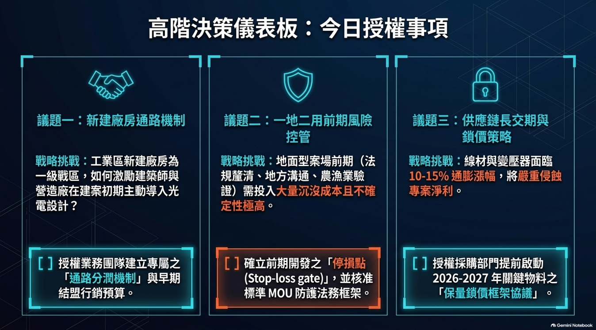
| 議題項目 | 核心戰略挑戰 | 今日拍板授權內容 | 具體落地行動與主責 |
|---|---|---|---|
| 議題一：新建廠房通路機制 業務與行銷 |
工業區新建廠房為一級戰區，同業削價競爭。如何激勵建築師與營造廠在建案初期主動導入光電設計？ | [✔] 授權業務團隊建立專屬之「通路分潤機制」與早期結盟行銷預算。 | 提撥專案前期顧問諮詢預算，提供建築師結構簽證技術支援；擬定合法透明之通路分潤契約。 主責：業務主管、法務 |
| 議題二：一地二用前期風險 法務與內控 |
地面型案場前期（法規釐清、地方溝通、農漁業驗證）需投入大量沉沒成本且不確定性極高。 | [✔] 確立前期開發之「停損點 (Stop-loss gate)」，並核准標準 MOU 防護法務框架。 | 訂定單案前期投入金額上限（如 50 萬元）與評估時限（90 天）；未簽署標準保護 MOU 前禁止實質資源下沉。 主責：法務主管、專案經理 |
| 議題三：長交期與鎖價策略 採購與供應鏈 |
線材與變壓器面臨 10~60% 通膨漲幅與 18 個月交期，將嚴重侵蝕在手與未來專案淨利。 | [✔] 授權採購部門提前啟動 2026–2027 年關鍵物料之「保量鎖價框架協議」。 | 針對變壓器與特高壓升壓站設備鎖定關鍵配額，啟動合格第二來源（2nd Source）認證。 主責：採購主管、工程總監 |
| 文獻 # | 官方公開出處與查核資料庫 | 檢索日期 / 發布日期 | 主要驗證項目 |
|---|---|---|---|
| 1 | SEMI 官方網站｜GES Taiwan 2026 Executive Summit on Energy and Sustainability | 2026-09-08 存取 | 證實 2026/9/1 TaiNEX 邀請制峰會無誤 |
| 2 | 經濟部公開新聞稿｜公布 114 年度全國電力資源供需報告 | 2026-06-18 | 天然氣 2026–2035 累計新增 26 GW、用電需求年增 2.5% |
| 3 | 經濟部能源署｜我國擘劃離岸風電中長程發展藍圖 | 2026-07-10 | 截至 115/7/10 累計 4.9 GW；2035 年累計目標 18.3–19.9 GW |
| 4 | 經濟部能源署官方研討會簡報｜能源轉型策略與進展多元、安全與韌性 | 2026-08-24 | 太陽光電 16GW 累計、AIDC 區位引導共址共構、PUE≤1.3 強制審查 |
| 5 | 今周刊新能源論壇簡報｜能源轉型最後一哩路：如何跨越綠能的社會接受度？ | 2026-08-24 | 志光 85MW 漁電共生 40% 遮蔽率、大亞 240MW 信任模型、0403 地震 510MW 儲能救援 |
| 6 | 經濟部能源署官方公告｜115 年度再生能源躉購費率公告 | 115 年度生效公告 | 證實 2026 年度太陽光電躉購費率沿用凍結、未調升 |
| 7 | 豐雲學堂券商產業報告｜變壓器價格指數 2 年大漲 60% | 2026-09 | 指出變壓器外部價格漲幅高達 60%，內部 +10% 低估 |
| 8 | 內部會議簡報原件｜《政府能源政策跟進能服的策略討論_20260908.pptx》 | 2026-09-08 | 簡報投影片第 1 至 7 頁完整文字、物料漲幅矩陣與原圖 |